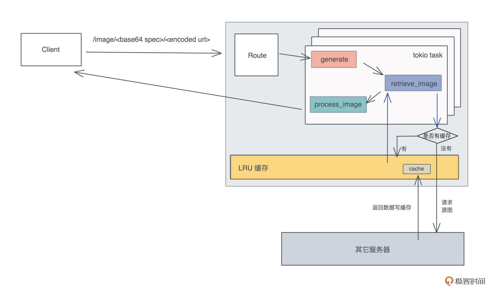
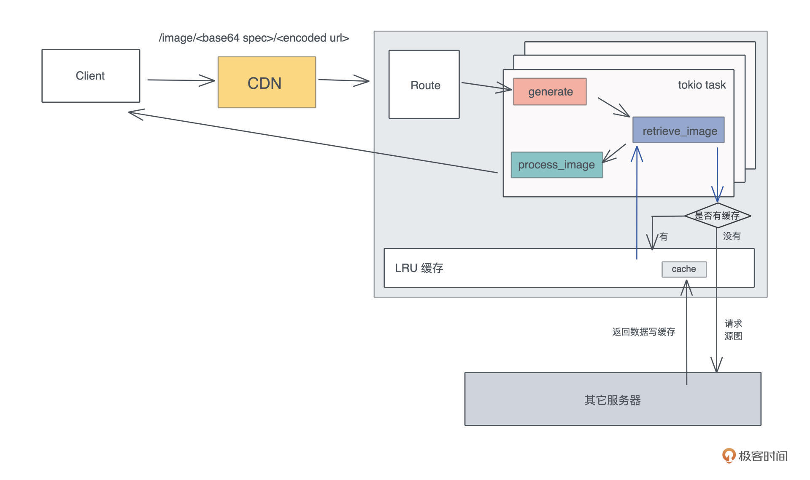

- 00 开篇词 让Rust成为你的下一门主力语言.md.html
- 01 内存：值放堆上还是放栈上，这是一个问题.md.html
- 02 串讲：编程开发中，那些你需要掌握的基本概念.md.html
- 03 初窥门径：从你的第一个Rust程序开始！.md.html
- 04 get hands dirty：来写个实用的CLI小工具.md.html
- 05 get hands dirty：做一个图片服务器有多难？.md.html
- 06 get hands dirty：SQL查询工具怎么一鱼多吃？.md.html
- 07 所有权：值的生杀大权到底在谁手上？.md.html
- 08 所有权：值的借用是如何工作的？.md.html
- 09 所有权：一个值可以有多个所有者么？.md.html
- 10 生命周期：你创建的值究竟能活多久？.md.html
- 11 内存管理：从创建到消亡，值都经历了什么？.md.html
- 12 类型系统：Rust的类型系统有什么特点？.md.html
- 13 类型系统：如何使用trait来定义接口？.md.html
- 14 类型系统：有哪些必须掌握的trait？.md.html
- 15 数据结构：这些浓眉大眼的结构竟然都是智能指针？.md.html
- 16 数据结构：Vec_T_、&[T]、Box_[T]_ ，你真的了解集合容器么？.md.html
- 17 数据结构：软件系统核心部件哈希表，内存如何布局？.md.html
- 18 错误处理：为什么Rust的错误处理与众不同？.md.html
- 19 闭包：FnOnce、FnMut和Fn，为什么有这么多类型？.md.html
- 20 4 Steps ：如何更好地阅读Rust源码？.md.html
- 21 阶段实操（1）：构建一个简单的KV server-基本流程.md.html
- 22 阶段实操（2）：构建一个简单的KV server-基本流程.md.html
- 23 类型系统：如何在实战中使用泛型编程？.md.html
- 24 类型系统：如何在实战中使用trait object？.md.html
- 25 类型系统：如何围绕trait来设计和架构系统？.md.html
- 26 阶段实操（3）：构建一个简单的KV server-高级trait技巧.md.html
- 27 生态系统：有哪些常有的Rust库可以为我所用？.md.html
- 28 网络开发（上）：如何使用Rust处理网络请求？.md.html
- 29 网络开发（下）：如何使用Rust处理网络请求？.md.html
- 30 Unsafe Rust：如何用C++的方式打开Rust？.md.html
- 31 FFI：Rust如何和你的语言架起沟通桥梁？.md.html
- 32 实操项目：使用PyO3开发Python3模块.md.html
- 33 并发处理（上）：从atomics到Channel，Rust都提供了什么工具？.md.html
- 34 并发处理（下）：从atomics到Channel，Rust都提供了什么工具？.md.html
- 35 实操项目：如何实现一个基本的MPSC channel？.md.html
- 36 阶段实操（4）：构建一个简单的KV server-网络处理.md.html
- 37 阶段实操（5）：构建一个简单的KV server-网络安全.md.html
- 38 异步处理：Future是什么？它和async_await是什么关系？.md.html
- 39 异步处理：async_await内部是怎么实现的？.md.html
- 40 异步处理：如何处理异步IO？.md.html
- 41 阶段实操（6）：构建一个简单的KV server-异步处理.md.html
- 42 阶段实操（7）：构建一个简单的KV server-如何做大的重构？.md.html
- 43 生产环境：真实世界下的一个Rust项目包含哪些要素？.md.html
- 44 数据处理：应用程序和数据如何打交道？.md.html
- 45 阶段实操（8）：构建一个简单的KV server-配置_测试_监控_CI_CD.md.html
- 46 软件架构：如何用Rust架构复杂系统？.md.html
- 加餐 Rust2021版次问世了！.md.html
- 加餐 代码即数据：为什么我们需要宏编程能力？.md.html
- 加餐 宏编程（上）：用最“笨”的方式撰写宏.md.html
- 加餐 宏编程（下）：用 syn_quote 优雅地构建宏.md.html
- 加餐 愚昧之巅：你的Rust学习常见问题汇总.md.html
- 加餐 期中测试：参考实现讲解.md.html
- 加餐 期中测试：来写一个简单的grep命令行.md.html
- 加餐 这个专栏你可以怎么学，以及Rust是否值得学？.md.html
- 大咖助场 开悟之坡（上）：Rust的现状、机遇与挑战.md.html
- 大咖助场 开悟之坡（下）：Rust的现状、机遇与挑战.md.html
- 特别策划 学习锦囊（一）：听听课代表们怎么说.md.html
- 特别策划 学习锦囊（三）：听听课代表们怎么说.md.html
- 特别策划 学习锦囊（二）：听听课代表们怎么说.md.html
- 用户故事 绝望之谷：改变从学习开始.md.html
- 用户故事 语言不仅是工具，还是思维方式.md.html
- 结束语 永续之原：Rust学习，如何持续精进？.md.html
- 捐赠
05 get hands dirty：做一个图片服务器有多难？
你好，我是陈天。
上一讲我们只用了百来行代码就写出了 HTTPie 这个小工具，你是不是有点意犹未尽，今天我们就来再写一个实用的小例子，看看Rust还能怎么玩。
再说明一下，代码看不太懂完全没有关系，先不要强求理解，跟着我的节奏一行行写就好，先让自己的代码跑起来，感受 Rust 和自己常用语言的区别，看看代码风格是什么样的，就可以了。
今天的例子是我们在工作中都会遇到的需求：构建一个 Web Server，对外提供某种服务。类似上一讲的 HTTPie ，我们继续找一个已有的开源工具用 Rust 来重写，但是今天来挑战一个稍大一点的项目：构建一个类似 Thumbor 的图片服务器。
Thumbor
Thumbor 是 Python 下的一个非常著名的图片服务器，被广泛应用在各种需要动态调整图片尺寸的场合里。
它可以通过一个很简单的 HTTP 接口，实现图片的动态剪切和大小调整，另外还支持文件存储、替换处理引擎等其他辅助功能。我在之前的创业项目中还用过它，非常实用，性能也还不错。
我们看它的例子：
http://<thumbor-server>/300x200/smart/thumbor.readthedocs.io/en/latest/_images/logo-thumbor.png
在这个例子里，Thumbor 可以对这个图片最后的 URL 使用 smart crop 剪切，并调整大小为 300x200 的尺寸输出，用户访问这个 URL 会得到一个 300x200 大小的缩略图。
我们今天就来实现它最核心的功能，对图片进行动态转换。你可以想一想，如果用你最熟悉的语言，要实现这个服务，怎么设计，需要用到些什么库，大概用多少行代码？如果用 Rust 的话，又大概会多少行代码？
带着你自己的一些想法，开始用 Rust 构建这个工具吧！目标依旧是，用大约 200 行代码实现我们的需求。
设计分析
既然是图片转换，最基本的肯定是要支持各种各样的转换功能，比如调整大小、剪切、加水印，甚至包括图片的滤镜但是，图片转换服务的难点其实在接口设计上，如何设计一套易用、简洁的接口，让图片服务器未来可以很轻松地扩展。
为什么这么说，你想如果有一天，产品经理来找你，突然想让原本只用来做缩略图的图片服务，支持老照片的滤镜效果，你准备怎么办？
Thumbor 给出的答案是，把要使用的处理方法的接口，按照一定的格式、一定的顺序放在 URL 路径中，不使用的图片处理方法就不放：
/hmac/trim/AxB:CxD/(adaptative-)(full-)fit-in/-Ex-F/HALIGN/VALIGN/smart/filters:FILTERNAME(ARGUMENT):FILTERNAME(ARGUMENT)/*IMAGE-URI*
但这样不容易扩展，解析起来不方便，也很难满足对图片做多个有序操作的要求，比如对某个图片我想先加滤镜再加水印，对另一个图片我想先加水印再加滤镜。
另外，如果未来要加更多的参数，一个不小心，还很可能和已有的参数冲突，或者造成 API 的破坏性更新（breaking change）。作为开发者，我们永远不要低估产品经理那颗什么奇葩想法都有的躁动的心。
所以，在构思这个项目的时候，我们需要找一种更简洁且可扩展的方式，来描述对图片进行的一系列有序操作，比如说：先做 resize，之后对 resize 的结果添加一个水印，最后统一使用一个滤镜。
这样的有序操作，对应到代码中，可以用列表来表述，列表中每个操作可以是一个 enum，像这样：
// 解析出来的图片处理的参数
struct ImageSpec {
specs: Vec<Spec>
}
// 每个参数的是我们支持的某种处理方式
enum Spec {
Resize(Resize),
Crop(Crop),
...
}
// 处理图片的 resize
struct Resize {
width: u32,
height: u32
}
现在需要的数据结构有了，刚才分析了 thumbor 使用的方式拓展性不好，那我们如何设计一个任何客户端可以使用的、体现在 URL 上的接口，使其能够解析成我们设计的数据结构呢？
使用 querystring 么？虽然可行，但它在图片处理步骤比较复杂的时候，容易无序增长，比如我们要对某个图片做七八次转换，这个 querystring 就会非常长。
我这里的思路是使用 protobuf。protobuf 可以描述数据结构，几乎所有语言都有对 protobuf 的支持。当用 protobuf 生成一个 image spec 后，我们可以将其序列化成字节流。但字节流无法放在 URL 中，怎么办？我们可以用 base64 转码！
顺着这个思路，来试着写一下描述 image spec 的 protobuf 消息的定义：
message ImageSpec { repeated Spec specs = 1; }
message Spec {
oneof data {
Resize resize = 1;
Crop crop = 2;
...
}
}
...
这样我们就可以在 URL 中，嵌入通过 protobuf 生成的 base64 字符串，来提供可扩展的图片处理参数。处理过的 URL 长这个样子：
http://localhost:3000/image/CgoKCAjYBBCgBiADCgY6BAgUEBQKBDICCAM/<encoded origin url>
CgoKCAjYBBCgBiADCgY6BAgUEBQKBDICCAM 描述了我们上面说的图片的处理流程：先做 resize，之后对 resize 的结果添加一个水印，最后统一使用一个滤镜。它可以用下面的代码实现：
fn print_test_url(url: &str) {
use std::borrow::Borrow;
let spec1 = Spec::new_resize(600, 800, resize::SampleFilter::CatmullRom);
let spec2 = Spec::new_watermark(20, 20);
let spec3 = Spec::new_filter(filter::Filter::Marine);
let image_spec = ImageSpec::new(vec![spec1, spec2, spec3]);
let s: String = image_spec.borrow().into();
let test_image = percent_encode(url.as_bytes(), NON_ALPHANUMERIC).to_string();
println!("test url: http://localhost:3000/image/{}/{}", s, test_image);
}
使用 protobuf 的好处是，序列化后的结果比较小巧，而且任何支持 protobuf 的语言都可以生成或者解析这个接口。
好，接口我们敲定好，接下来就是做一个 HTTP 服务器提供这个接口。在 HTTP 服务器对 /image 路由的处理流程里，我们需要从 URL 中获取原始的图片，然后按照 image spec 依次处理，最后把处理完的字节流返回给用户。
在这个流程中，显而易见能够想到的优化是，为原始图片的获取过程，提供一个 LRU（Least Recently Used）缓存，因为访问外部网络是整个路径中最缓慢也最不可控的环节。

分析完后，是不是感觉 thumbor 也没有什么复杂的？不过你一定会有疑问：200 行代码真的可以完成这么多工作么？我们先写着，完成之后再来统计一下。
protobuf 的定义和编译
这个项目我们需要很多依赖，就不一一介绍了，未来在你的学习、工作中，大部分依赖你都会渐渐遇到和使用到。
我们照样先 “cargo new thumbor” 生成项目，然后在项目的 Cargo.toml 中添加这些依赖：
[dependencies]
axum = "0.2" # web 服务器
anyhow = "1" # 错误处理
base64 = "0.13" # base64 编码/解码
bytes = "1" # 处理字节流
image = "0.23" # 处理图片
lazy_static = "1" # 通过宏更方便地初始化静态变量
lru = "0.6" # LRU 缓存
percent-encoding = "2" # url 编码/解码
photon-rs = "0.3" # 图片效果
prost = "0.8" # protobuf 处理
reqwest = "0.11" # HTTP cliebnt
serde = { version = "1", features = ["derive"] } # 序列化/反序列化数据
tokio = { version = "1", features = ["full"] } # 异步处理
tower = { version = "0.4", features = ["util", "timeout", "load-shed", "limit"] } # 服务处理及中间件
tower-http = { version = "0.1", features = ["add-extension", "compression-full", "trace" ] } # http 中间件
tracing = "0.1" # 日志和追踪
tracing-subscriber = "0.2" # 日志和追踪
[build-dependencies]
prost-build = "0.8" # 编译 protobuf
在项目根目录下，生成一个 abi.proto 文件，写入我们支持的图片处理服务用到的数据结构：
syntax = "proto3";
package abi; // 这个名字会被用作编译结果，prost 会产生：abi.rs
// 一个 ImageSpec 是一个有序的数组，服务器按照 spec 的顺序处理
message ImageSpec { repeated Spec specs = 1; }
// 处理图片改变大小
message Resize {
uint32 width = 1;
uint32 height = 2;
enum ResizeType {
NORMAL = 0;
SEAM_CARVE = 1;
}
ResizeType rtype = 3;
enum SampleFilter {
UNDEFINED = 0;
NEAREST = 1;
TRIANGLE = 2;
CATMULL_ROM = 3;
GAUSSIAN = 4;
LANCZOS3 = 5;
}
SampleFilter filter = 4;
}
// 处理图片截取
message Crop {
uint32 x1 = 1;
uint32 y1 = 2;
uint32 x2 = 3;
uint32 y2 = 4;
}
// 处理水平翻转
message Fliph {}
// 处理垂直翻转
message Flipv {}
// 处理对比度
message Contrast { float contrast = 1; }
// 处理滤镜
message Filter {
enum Filter {
UNSPECIFIED = 0;
OCEANIC = 1;
ISLANDS = 2;
MARINE = 3;
// more: https://docs.rs/photon-rs/0.3.1/photon_rs/filters/fn.filter.html
}
Filter filter = 1;
}
// 处理水印
message Watermark {
uint32 x = 1;
uint32 y = 2;
}
// 一个 spec 可以包含上述的处理方式之一
message Spec {
oneof data {
Resize resize = 1;
Crop crop = 2;
Flipv flipv = 3;
Fliph fliph = 4;
Contrast contrast = 5;
Filter filter = 6;
Watermark watermark = 7;
}
}
这包含了我们支持的图片处理服务，以后可以轻松扩展它来支持更多的操作。
protobuf 是一个向下兼容的工具，所以在服务器不断支持更多功能时，还可以和旧版本的客户端兼容。在 Rust 下，我们可以用 prost 来使用和编译 protobuf。同样，在项目根目录下，创建一个 build.rs，写入以下代码：
fn main() {
prost_build::Config::new()
.out_dir("src/pb")
.compile_protos(&["abi.proto"], &["."])
.unwrap();
}
build.rs 可以在编译 cargo 项目时，做额外的编译处理。这里我们使用 prost_build 把 abi.proto 编译到 src/pb 目录下。
这个目录现在还不存在，你需要 mkdir src/pb 创建它。运行 cargo build，你会发现在 src/pb 下，有一个 abi.rs 文件被生成出来，这个文件包含了从 protobuf 消息转换出来的 Rust 数据结构。我们先不用管 prost 额外添加的各种标记宏，就把它们当成普通的数据结构使用即可。
接下来，我们创建 src/pb/mod.rs，第三讲说过，一个目录下的所有代码，可以通过 mod.rs 声明。在这个文件中，我们引入 abi.rs，并且撰写一些辅助函数。这些辅助函数主要是为了，让 ImageSpec 可以被方便地转换成字符串，或者从字符串中恢复。
另外，我们还写了一个测试确保功能的正确性，你可以 cargo test 测试一下。记得在 main.rs 里添加 mod pb; 引入这个模块。
use base64::{decode_config, encode_config, URL_SAFE_NO_PAD};
use photon_rs::transform ::SamplingFilter;
use prost::Message;
use std::convert::TryFrom;
mod abi; // 声明 abi.rs
pub use abi::*;
impl ImageSpec {
pub fn new(specs: Vec<Spec>) -> Self {
Self { specs }
}
}
// 让 ImageSpec 可以生成一个字符串
impl From<&ImageSpec> for String {
fn from(image_spec: &ImageSpec) -> Self {
let data = image_spec.encode_to_vec();
encode_config(data, URL_SAFE_NO_PAD)
}
}
// 让 ImageSpec 可以通过一个字符串创建。比如 s.parse().unwrap()
impl TryFrom<&str> for ImageSpec {
type Error = anyhow::Error;
fn try_from(value: &str) -> Result<Self, Self::Error> {
let data = decode_config(value, URL_SAFE_NO_PAD)?;
Ok(ImageSpec::decode(&data[..])?)
}
}
// 辅助函数，photon_rs 相应的方法里需要字符串
impl filter::Filter {
pub fn to_str(&self) -> Option<&'static str> {
match self {
filter::Filter::Unspecified => None,
filter::Filter::Oceanic => Some("oceanic"),
filter::Filter::Islands => Some("islands"),
filter::Filter::Marine => Some("marine"),
}
}
}
// 在我们定义的 SampleFilter 和 photon_rs 的 SamplingFilter 间转换
impl From<resize::SampleFilter> for SamplingFilter {
fn from(v: resize::SampleFilter) -> Self {
match v {
resize::SampleFilter::Undefined => SamplingFilter::Nearest,
resize::SampleFilter::Nearest => SamplingFilter::Nearest,
resize::SampleFilter::Triangle => SamplingFilter::Triangle,
resize::SampleFilter::CatmullRom => SamplingFilter::CatmullRom,
resize::SampleFilter::Gaussian => SamplingFilter::Gaussian,
resize::SampleFilter::Lanczos3 => SamplingFilter::Lanczos3,
}
}
}
// 提供一些辅助函数，让创建一个 spec 的过程简单一些
impl Spec {
pub fn new_resize_seam_carve(width: u32, height: u32) -> Self {
Self {
data: Some(spec::Data::Resize(Resize {
width,
height,
rtype: resize::ResizeType::SeamCarve as i32,
filter: resize::SampleFilter::Undefined as i32,
})),
}
}
pub fn new_resize(width: u32, height: u32, filter: resize::SampleFilter) -> Self {
Self {
data: Some(spec::Data::Resize(Resize {
width,
height,
rtype: resize::ResizeType::Normal as i32,
filter: filter as i32,
})),
}
}
pub fn new_filter(filter: filter::Filter) -> Self {
Self {
data: Some(spec::Data::Filter(Filter {
filter: filter as i32,
})),
}
}
pub fn new_watermark(x: u32, y: u32) -> Self {
Self {
data: Some(spec::Data::Watermark(Watermark { x, y })),
}
}
}
#[cfg(test)]
mod tests {
use super::*;
use std::borrow::Borrow;
use std::convert::TryInto;
#[test]
fn encoded_spec_could_be_decoded() {
let spec1 = Spec::new_resize(600, 600, resize::SampleFilter::CatmullRom);
let spec2 = Spec::new_filter(filter::Filter::Marine);
let image_spec = ImageSpec::new(vec![spec1, spec2]);
let s: String = image_spec.borrow().into();
assert_eq!(image_spec, s.as_str().try_into().unwrap());
}
}
引入 HTTP 服务器
处理完和 protobuf 相关的内容，我们来处理 HTTP 服务的流程。Rust 社区有很多高性能的 Web 服务器，比如actix-web 、rocket 、warp ，以及最近新出的 axum。我们就来用新鲜出炉的 axum 做这个服务器。
根据 axum 的文档，我们可以构建出下面的代码：
use axum::{extract::Path, handler::get, http::StatusCode, Router};
use percent_encoding::percent_decode_str;
use serde::Deserialize;
use std::convert::TryInto;
// 引入 protobuf 生成的代码，我们暂且不用太关心他们
mod pb;
use pb::*;
// 参数使用 serde 做 Deserialize，axum 会自动识别并解析
#[derive(Deserialize)]
struct Params {
spec: String,
url: String,
}
#[tokio::main]
async fn main() {
// 初始化 tracing
tracing_subscriber::fmt::init();
// 构建路由
let app = Router::new()
// `GET /image` 会执行 generate 函数，并把 spec 和 url 传递过去
.route("/image/:spec/:url", get(generate));
// 运行 web 服务器
let addr = "127.0.0.1:3000".parse().unwrap();
tracing::debug!("listening on {}", addr);
axum::Server::bind(&addr)
.serve(app.into_make_service())
.await
.unwrap();
}
// 目前我们就只把参数解析出来
async fn generate(Path(Params { spec, url }): Path<Params>) -> Result<String, StatusCode> {
let url = percent_decode_str(&url).decode_utf8_lossy();
let spec: ImageSpec = spec
.as_str()
.try_into()
.map_err(|_| StatusCode::BAD_REQUEST)?;
Ok(format!("url: {}\n spec: {:#?}", url, spec))
}
把它们添加到 main.rs 后，使用 cargo run 运行服务器。然后我们就可以用上一讲做的 HTTPie 测试（eat your own dog food）：
httpie get "http://localhost:3000/image/CgoKCAjYBBCgBiADCgY6BAgUEBQKBDICCAM/https%3A%2F%2Fimages%2Epexels%2Ecom%2Fphotos%2F2470905%2Fpexels%2Dphoto%2D2470905%2Ejpeg%3Fauto%3Dcompress%26cs%3Dtinysrgb%26dpr%3D2%26h%3D750%26w%3D1260"
HTTP/1.1 200 OK
content-type: "text/plain"
content-length: "901"
date: "Wed, 25 Aug 2021 18:03:50 GMT"
url: https://images.pexels.com/photos/2470905/pexels-photo-2470905.jpeg?auto=compress&cs=tinysrgb&dpr=2&h=750&w=1260
spec: ImageSpec {
specs: [
Spec {
data: Some(
Resize(
Resize {
width: 600,
height: 800,
rtype: Normal,
filter: CatmullRom,
},
),
),
},
Spec {
data: Some(
Watermark(
Watermark {
x: 20,
y: 20,
},
),
),
},
Spec {
data: Some(
Filter(
Filter {
filter: Marine,
},
),
),
},
],
Wow，Web 服务器的接口部分我们已经能够正确处理了。
写到这里，如果出现的语法让你觉得迷茫，不要担心。因为我们还没有讲所有权、类型系统、泛型等内容，所以很多细节你会看不懂。今天这个例子，你只要跟我的思路走，了解整个处理流程就可以了。
获取源图并缓存
好，当接口已经可以工作之后，我们再来处理获取源图的逻辑。
根据之前的设计，需要引入 LRU cache 来缓存源图。一般 Web 框架都会有中间件来处理全局的状态，axum 也不例外，可以使用 AddExtensionLayer 添加一个全局的状态，这个状态目前就是 LRU cache，在内存中缓存网络请求获得的源图。
我们把 main.rs 的代码，改成下面的代码：
use anyhow::Result;
use axum::{
extract::{Extension, Path},
handler::get,
http::{HeaderMap, HeaderValue, StatusCode},
AddExtensionLayer, Router,
};
use bytes::Bytes;
use lru::LruCache;
use percent_encoding::{percent_decode_str, percent_encode, NON_ALPHANUMERIC};
use serde::Deserialize;
use std::{
collections::hash_map::DefaultHasher,
convert::TryInto,
hash::{Hash, Hasher},
sync::Arc,
};
use tokio::sync::Mutex;
use tower::ServiceBuilder;
use tracing::{info, instrument};
mod pb;
use pb::*;
#[derive(Deserialize)]
struct Params {
spec: String,
url: String,
}
type Cache = Arc<Mutex<LruCache<u64, Bytes>>>;
#[tokio::main]
async fn main() {
// 初始化 tracing
tracing_subscriber::fmt::init();
let cache: Cache = Arc::new(Mutex::new(LruCache::new(1024)));
// 构建路由
let app = Router::new()
// `GET /` 会执行
.route("/image/:spec/:url", get(generate))
.layer(
ServiceBuilder::new()
.layer(AddExtensionLayer::new(cache))
.into_inner(),
);
// 运行 web 服务器
let addr = "127.0.0.1:3000".parse().unwrap();
print_test_url("https://images.pexels.com/photos/1562477/pexels-photo-1562477.jpeg?auto=compress&cs=tinysrgb&dpr=3&h=750&w=1260");
info!("Listening on {}", addr);
axum::Server::bind(&addr)
.serve(app.into_make_service())
.await
.unwrap();
}
async fn generate(
Path(Params { spec, url }): Path<Params>,
Extension(cache): Extension<Cache>,
) -> Result<(HeaderMap, Vec<u8>), StatusCode> {
let spec: ImageSpec = spec
.as_str()
.try_into()
.map_err(|_| StatusCode::BAD_REQUEST)?;
let url: &str = &percent_decode_str(&url).decode_utf8_lossy();
let data = retrieve_image(&url, cache)
.await
.map_err(|_| StatusCode::BAD_REQUEST)?;
// TODO: 处理图片
let mut headers = HeaderMap::new();
headers.insert("content-type", HeaderValue::from_static("image/jpeg"));
Ok((headers, data.to_vec()))
}
#[instrument(level = "info", skip(cache))]
async fn retrieve_image(url: &str, cache: Cache) -> Result<Bytes> {
let mut hasher = DefaultHasher::new();
url.hash(&mut hasher);
let key = hasher.finish();
let g = &mut cache.lock().await;
let data = match g.get(&key) {
Some(v) => {
info!("Match cache {}", key);
v.to_owned()
}
None => {
info!("Retrieve url");
let resp = reqwest::get(url).await?;
let data = resp.bytes().await?;
g.put(key, data.clone());
data
}
};
Ok(data)
}
// 调试辅助函数
fn print_test_url(url: &str) {
use std::borrow::Borrow;
let spec1 = Spec::new_resize(500, 800, resize::SampleFilter::CatmullRom);
let spec2 = Spec::new_watermark(20, 20);
let spec3 = Spec::new_filter(filter::Filter::Marine);
let image_spec = ImageSpec::new(vec![spec1, spec2, spec3]);
let s: String = image_spec.borrow().into();
let test_image = percent_encode(url.as_bytes(), NON_ALPHANUMERIC).to_string();
println!("test url: http://localhost:3000/image/{}/{}", s, test_image);
}
这段代码看起来多，其实主要就是添加了 retrieve_image 这个函数。对于图片的网络请求，我们先把 URL 做个哈希，在 LRU 缓存中查找，找不到才用 reqwest 发送请求。-
你可以 cargo run 运行一下现在的代码：
❯ RUST_LOG=info cargo run --quiet
test url: http://localhost:3000/image/CgoKCAj0AxCgBiADCgY6BAgUEBQKBDICCAM/https%3A%2F%2Fimages%2Epexels%2Ecom%2Fphotos%2F1562477%2Fpexels%2Dphoto%2D1562477%2Ejpeg%3Fauto%3Dcompress%26cs%3Dtinysrgb%26dpr%3D3%26h%3D750%26w%3D1260
Aug 26 16:43:45.747 INFO server2: Listening on 127.0.0.1:3000
为了测试方便，我放了个辅助函数可以生成一个测试 URL，在浏览器中打开后会得到一个和源图一模一样的图片。这就说明，网络处理的部分，我们就搞定了。
图片处理
接下来，我们就可以处理图片了。Rust 下有一个不错的、偏底层的 image 库，围绕它有很多上层的库，包括我们今天要使用 photon_rs。
我扫了一下它的源代码，感觉它不算一个特别优秀的库，内部有太多无谓的内存拷贝，所以性能还有不少提升空间。就算如此，从 photon_rs 自己的 benchmark 看，也比 PIL/ImageMagick 性能好太多，这也算是 Rust 性能强大的一个小小佐证吧。

因为 photo_rs 使用简单，这里我们也不太关心更高的性能，就暂且用它。然而，作为一个有追求的开发者，我们知道，有朝一日可能要用不同的 image 引擎替换它，所以我们设计一个 Engine trait：
// Engine trait：未来可以添加更多的 engine，主流程只需要替换 engine
pub trait Engine {
// 对 engine 按照 specs 进行一系列有序的处理
fn apply(&mut self, specs: &[Spec]);
// 从 engine 中生成目标图片，注意这里用的是 self，而非 self 的引用
fn generate(self, format: ImageOutputFormat) -> Vec<u8>;
}
它提供两个方法，apply 方法对 engine 按照 specs 进行一系列有序的处理，generate 方法从 engine 中生成目标图片。
那么 apply 方法怎么实现呢？我们可以再设计一个 trait，这样可以为每个 Spec 生成对应处理：
// SpecTransform：未来如果添加更多的 spec，只需要实现它即可
pub trait SpecTransform<T> {
// 对图片使用 op 做 transform
fn transform(&mut self, op: T);
}
好，有了这个思路，我们创建 src/engine 目录，并添加 src/engine/mod.rs，在这个文件里添加对 trait 的定义：
use crate::pb::Spec;
use image::ImageOutputFormat;
mod photon;
pub use photon::Photon;
// Engine trait：未来可以添加更多的 engine，主流程只需要替换 engine
pub trait Engine {
// 对 engine 按照 specs 进行一系列有序的处理
fn apply(&mut self, specs: &[Spec]);
// 从 engine 中生成目标图片，注意这里用的是 self，而非 self 的引用
fn generate(self, format: ImageOutputFormat) -> Vec<u8>;
}
// SpecTransform：未来如果添加更多的 spec，只需要实现它即可
pub trait SpecTransform<T> {
// 对图片使用 op 做 transform
fn transform(&mut self, op: T);
}
接下来我们再生成一个文件 src/engine/photon.rs，对 photon 实现 Engine trait，这个文件主要是一些功能的实现细节，就不详述了，你可以看注释。
use super::{Engine, SpecTransform};
use crate::pb::*;
use anyhow::Result;
use bytes::Bytes;
use image::{DynamicImage, ImageBuffer, ImageOutputFormat};
use lazy_static::lazy_static;
use photon_rs::{
effects, filters, multiple, native::open_image_from_bytes, transform, PhotonImage,
};
use std::convert::TryFrom;
lazy_static! {
// 预先把水印文件加载为静态变量
static ref WATERMARK: PhotonImage = {
// 这里你需要把我 github 项目下的对应图片拷贝到你的根目录
// 在编译的时候 include_bytes! 宏会直接把文件读入编译后的二进制
let data = include_bytes!("../../rust-logo.png");
let watermark = open_image_from_bytes(data).unwrap();
transform::resize(&watermark, 64, 64, transform::SamplingFilter::Nearest)
};
}
// 我们目前支持 Photon engine
pub struct Photon(PhotonImage);
// 从 Bytes 转换成 Photon 结构
impl TryFrom<Bytes> for Photon {
type Error = anyhow::Error;
fn try_from(data: Bytes) -> Result<Self, Self::Error> {
Ok(Self(open_image_from_bytes(&data)?))
}
}
impl Engine for Photon {
fn apply(&mut self, specs: &[Spec]) {
for spec in specs.iter() {
match spec.data {
Some(spec::Data::Crop(ref v)) => self.transform(v),
Some(spec::Data::Contrast(ref v)) => self.transform(v),
Some(spec::Data::Filter(ref v)) => self.transform(v),
Some(spec::Data::Fliph(ref v)) => self.transform(v),
Some(spec::Data::Flipv(ref v)) => self.transform(v),
Some(spec::Data::Resize(ref v)) => self.transform(v),
Some(spec::Data::Watermark(ref v)) => self.transform(v),
// 对于目前不认识的 spec，不做任何处理
_ => {}
}
}
}
fn generate(self, format: ImageOutputFormat) -> Vec<u8> {
image_to_buf(self.0, format)
}
}
impl SpecTransform<&Crop> for Photon {
fn transform(&mut self, op: &Crop) {
let img = transform::crop(&mut self.0, op.x1, op.y1, op.x2, op.y2);
self.0 = img;
}
}
impl SpecTransform<&Contrast> for Photon {
fn transform(&mut self, op: &Contrast) {
effects::adjust_contrast(&mut self.0, op.contrast);
}
}
impl SpecTransform<&Flipv> for Photon {
fn transform(&mut self, _op: &Flipv) {
transform::flipv(&mut self.0)
}
}
impl SpecTransform<&Fliph> for Photon {
fn transform(&mut self, _op: &Fliph) {
transform::fliph(&mut self.0)
}
}
impl SpecTransform<&Filter> for Photon {
fn transform(&mut self, op: &Filter) {
match filter::Filter::from_i32(op.filter) {
Some(filter::Filter::Unspecified) => {}
Some(f) => filters::filter(&mut self.0, f.to_str().unwrap()),
_ => {}
}
}
}
impl SpecTransform<&Resize> for Photon {
fn transform(&mut self, op: &Resize) {
let img = match resize::ResizeType::from_i32(op.rtype).unwrap() {
resize::ResizeType::Normal => transform::resize(
&mut self.0,
op.width,
op.height,
resize::SampleFilter::from_i32(op.filter).unwrap().into(),
),
resize::ResizeType::SeamCarve => {
transform::seam_carve(&mut self.0, op.width, op.height)
}
};
self.0 = img;
}
}
impl SpecTransform<&Watermark> for Photon {
fn transform(&mut self, op: &Watermark) {
multiple::watermark(&mut self.0, &WATERMARK, op.x, op.y);
}
}
// photon 库竟然没有提供在内存中对图片转换格式的方法，只好手工实现
fn image_to_buf(img: PhotonImage, format: ImageOutputFormat) -> Vec<u8> {
let raw_pixels = img.get_raw_pixels();
let width = img.get_width();
let height = img.get_height();
let img_buffer = ImageBuffer::from_vec(width, height, raw_pixels).unwrap();
let dynimage = DynamicImage::ImageRgba8(img_buffer);
let mut buffer = Vec::with_capacity(32768);
dynimage.write_to(&mut buffer, format).unwrap();
buffer
}
好，图片处理引擎就搞定了。这里用了一个水印图片，你可以去 GitHub repo 下载，然后放在项目根目录下。我们同样把 engine 模块加入 main.rs，并引入 Photon：
mod engine;
use engine::{Engine, Photon};
use image::ImageOutputFormat;
还记得 src/main.rs 的代码中，我们留了一个 TODO 么？
// TODO: 处理图片
let mut headers = HeaderMap::new();
headers.insert("content-type", HeaderValue::from_static("image/jpeg"));
Ok((headers, data.to_vec()))
我们把这段替换掉，使用刚才写好的 Photon 引擎处理：
// 使用 image engine 处理
let mut engine: Photon = data
.try_into()
.map_err(|_| StatusCode::INTERNAL_SERVER_ERROR)?;
engine.apply(&spec.specs);
let image = engine.generate(ImageOutputFormat::Jpeg(85));
info!("Finished processing: image size {}", image.len());
let mut headers = HeaderMap::new();
headers.insert("content-type", HeaderValue::from_static("image/jpeg"));
Ok((headers, image))
这样整个服务器的全部流程就完成了，完整的代码可以在 GitHub repo 访问。
我在网上随手找了一张图片来测试下效果。用 cargo build --release 编译 thumbor 项目，然后打开日志运行：
RUST_LOG=info target/release/thumbor
打开测试链接，在浏览器中可以看到左下角的处理后图片。（原图片来自 pexels，发布者 Min An）
成功了！这就是我们的 Thumbor 服务根据用户的请求缩小到 500x800、加了水印和 Marine 滤镜后的效果。
从日志看，第一次请求时因为没有缓存，需要请求源图，所以总共花了 400ms；如果你再刷新一下，后续对同一图片的请求，会命中缓存，花了大概 200ms。
Aug 25 15:09:28.035 INFO thumbor: Listening on 127.0.0.1:3000
Aug 25 15:09:30.523 INFO retrieve_image{url="<https://images.pexels.com/photos/1562477/pexels-photo-1562477.jpeg?auto=compress&cs=tinysrgb&dpr=3&h=750&w=1260>"}: thumbor: Retrieve url
Aug 25 15:09:30.950 INFO thumbor: Finished processing: image size 52674
Aug 25 15:09:35.037 INFO retrieve_image{url="<https://images.pexels.com/photos/1562477/pexels-photo-1562477.jpeg?auto=compress&cs=tinysrgb&dpr=3&h=750&w=1260>"}: thumbor: Match cache 13782279907884137652
Aug 25 15:09:35.254 INFO thumbor: Finished processing: image size 52674
这个版本目前是一个没有详细优化过的版本，性能已经足够好。而且，像 Thumbor 这样的图片服务，前面还有 CDN（Content Distribution Network）扛压力，只有 CDN 需要回源时，才会访问到，所以也可以不用太优化。

最后来看看目标完成得如何。如果不算 protobuf 生成的代码，Thumbor 这个项目，到目前为止我们写了 324 行代码：
❯ tokei src/main.rs src/engine/* src/pb/mod.rs
-------------------------------------------------------------------------------
Language Files Lines Code Comments Blanks
-------------------------------------------------------------------------------
Rust 4 394 324 22 48
-------------------------------------------------------------------------------
Total 4 394 324 22 48
-------------------------------------------------------------------------------
三百多行代码就把一个图片服务器的核心部分搞定了，不仅如此，还充分考虑到了架构的可扩展性，用 trait 实现了主要的图片处理流程，并且引入了缓存来避免不必要的网络请求。虽然比我们预期的 200 行代码多了 50% 的代码量，但我相信它进一步佐证了 Rust 强大的表达能力。
而且，通过合理使用 protobuf 定义接口和使用 trait 做图片引擎，未来添加新的功能非常简单，可以像搭积木一样垒上去，不会影响已有的功能，完全符合开闭原则（Open-Closed Principle）。
作为一门系统级语言，Rust 使用独特的内存管理方案，零成本地帮我们管理内存；作为一门高级语言，Rust 提供了足够强大的类型系统和足够完善的标准库，帮我们很容易写出低耦合、高内聚的代码。
小结
今天讲的 Thumbor 要比上一讲的 HTTPie 难度高一个数量级（完整代码在 GitHub repo ），所以细节理解不了不打紧，但我相信你会进一步被 Rust 强大的表现力、抽象能力和解决实际问题的能力折服。
比如说，我们通过 Engine trait 分离了具体的图片处理引擎和主流程，让主流程变得干净清爽；同时在处理 protobuf 生成的数据结构时，大量使用了 From/TryFrom trait 做数据类型的转换，也是一种解耦（关注点分离）的思路。
听我讲得这么流畅，你是不是觉得我写的时候肯定不会犯错。其实并没有，我在用 axum 写源图获取的流程时，就因为使用 Mutex 的错误而被编译器毒打，花了些时间才解决。
但这种毒打是非常让人心悦诚服且快乐的，因为我知道，这样的并发问题一旦泄露到生产环境，解决起来大概率会毫无头绪，只能一点点试错可能有问题的代码，那个时候代价就远非和编译器搏斗的这十来分钟可比了。
所以只要你入了门，写 Rust 代码的过程绝对是一种享受，绝大多数错误在编译时就被揪出来了，你的代码只要编译能通过，基本上不需要担心它运行时的正确性。
也正是因为这样，在前期学习 Rust 的时候编译很难通过，导致我们直观感觉它是一门难学的语言，但其实它又很容易上手。这听起来矛盾，但确实是我自己的感受：它之所以学起来有些费力，有点像讲拉丁语系的人学习中文一样，要打破很多自己原有的认知，去拥抱新的思想和概念。但是只要多写多思考，时间长了，理解起来就是水到渠成的事。
思考题
之前提到通过合理使用 protobuf 定义接口和使用 trait 做图片引擎，未来添加新的功能非常简单。如果你学有余力，可以自己尝试一下。
我们看如何添加新功能：
- 首先添加新的 proto，定义新的 spec
- 然后为 spec 实现 SpecTransform trait 和一些辅助函数
- 最后在 Engine 中使用 spec
如果要换图片引擎呢？也很简单：
- 添加新的图片引擎，像 Photon 那样，实现 Engine trait 以及为每种 spec 实现 SpecTransform Trait。
- 在 main.rs 里使用新的引擎。
欢迎在留言区分享你的思考，如果你觉得有收获，也欢迎你分享给你身边的朋友，邀他一起挑战。你的 Rust 学习第五次打卡成功，我们下一讲见！
© 2019 - 2023 Liangliang Lee. Powered by gin and hexo-theme-book.